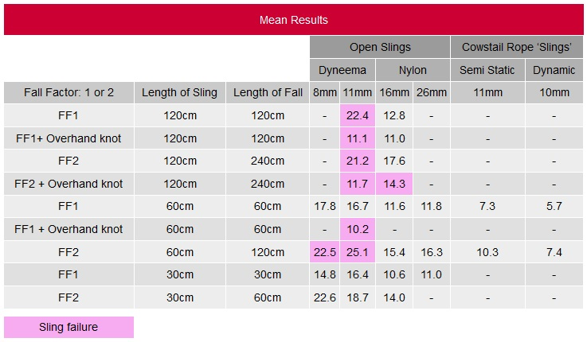

[转寄/推荐][转贴][删除][修改][设置可RE属性][上一篇][返回讨论区][下一篇][回文章][同主题列表][同主题阅读][从这里展开]
发信人: hemind(hooft), 信区: outdoor 标 题: 岩壁挂绳爬梯子的问题 发信站: 饮水思源 (2015年03月15日23:24:46 星期天) 现在都是爬垂直的梯子，用两条扁带做的牛尾交替保护，见之前的培训帖子“今天的培训 - 保护站”，https://bbs.sjtu.edu.cn/bbstcon,board,outdoor,reid,1413739581.html 但是如果在扁带上冲坠，冲击力是很大的，虽然到现在为止是没有出现在梯子上坠落的情 况，但是风险仍然存在；我认为可以这样： 1.用动力绳制做牛尾 2.岩壁后面修楼梯直接走上去，以后挂绳拆绳直接走上去走下来，减少不必要的操作。 冲击力有多大呢，见DMM做的测试。  screen.width - 200){this.width = screen.width - 200}"> |
[转寄/推荐][转贴][删除][修改][设置可RE属性][上一篇][返回讨论区][下一篇][回文章][同主题列表][同主题阅读][从这里展开]